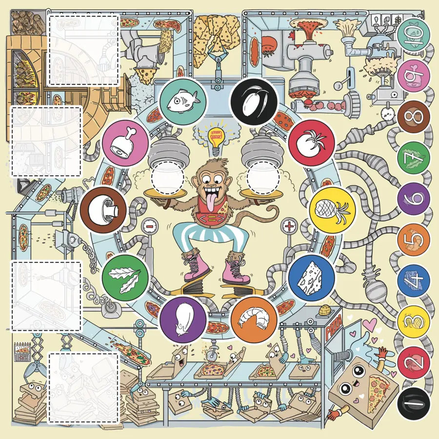

Stolová hra Pizza Love®
Pripravte obľúbené pizze krabíc na pizzu a ako prvý nazbierajte 10 rôznych kúskov – a vyhráte!
- 2–4 hráči
- od 6 rokov
- 3 spôsoby hry
- 10–20+ min
Pred prvou hrou
V krabici je hárok nálepiek a štyri krabičky, ktoré sa poskladajú raz. Zaberie to chvíľku a potom je hra vždy pripravená.
Ako hra funguje

- 1Sklad
- 2Linka
- 3Opičia váha
- 4Karty pízz
Víťazstvo
Vyhráte, ak ako prvý nazbierate do svojej krabice 10 rôznych kúskov. Pripravujte pizze na pláne a za ne získate zodpovedajúce kúsky do krabice. Srdcová pizza vám dá jeden kúsok navyše podľa vlastného výberu.
Príprava hry
- Farebné veže prísad naskladajte do skladu.
- Zamiešajte karty pízz a 4 položte na plán. Zvyšné karty pízz položte ako balíček na stôl.
- Zamiešajte opičie karty a položte ich ako balíček na stôl.
- Každý hráč dostane prázdnu krabicu.
Priebeh ťahu
Hod kockou a posúvanie figúrok
Začína hráč, ktorý naposledy jedol pizzu, a hodí kockou. Kocka určuje, koľko figúrok sa presunie medzi skladom a linkou. Figúrky rovnakej farby sa vždy presúvajú ako jedna veža. Ak nenájdete ťah, ostatní vám môžu pomôcť. Ak ho niekto nájde, urobí sa. Ak nikto, váš ťah končí.
Opičia váha a závažia pomáhajú deťom predstaviť si ťahy. Nemusia sa používať.
Príprava pizze
Keď sú prísady potrebné pre pizzu na linke, pripravte pizzu a kúsky si dajte do krabice. Za ťah môžete pripraviť viac pízz, ale každú prísadu môžete v jednom ťahu použiť len na jednu pizzu. Použité prísady vráťte do skladu a z balíčka si na plán dobierte novú kartu pizze.
Opičia karta
Ak ste pripravili aspoň jednu pizzu, na konci ťahu si vezmite opičiu kartu a riaďte sa ňou. Ťah pokračuje v smere hodinových ručičiek.
Tri spôsoby hry
Hod kockou, posúvanie prísad a príprava pízz fungujú vo všetkých troch rovnako.
Pizza Love – základná hraPreteky pre celú rodinu, od 6 rokov · asi 15–20 min
Pripravte obľúbené pizze krabíc na pizzu a ako prvý nazbierajte do svojej krabice 10 rôznych kúskov. Keď poznáte základnú hru, v pravidlách nájdete doplnkové pravidlá, ktoré ju zrýchlia.
Hladné opiceKooperatívna hra. Hrať ju môžete spolu aj so štvorročným dieťaťom a skúmať čísla a množstvá. · asi 10 min
Najľahší začiatok. Hráte spolu a plníte spoločnú krabicu. Ak ju naplníte 10 rôznymi kúskami, vyhrávate všetci. Ale pozor: hladné opice zjedia svoje kúsky hneď, ak neprichádzajú nové!
Tajné pizzeNapínavá a strategická · 20+ min
Každý dostane dve tajné pizze, ktoré ostatní nevidia – nikto teda nevie, ktoré pizze idete pripraviť. Vyhráva ten, kto prvý naplní svoju krabicu 10 rôznymi kúskami.

Pravidlá na vytlačenie
Úplné pravidlá všetkých spôsobov hry vo fínčine, švédčine a angličtine.
- Stručný návod (na vytlačenie)PDF
- Základná hra – úplné pravidláPDF 3,1 MB
- Hladné opice – úplné pravidláPDF 2,5 MB
- Tajné pizze – úplné pravidláPDF 3,0 MB

Ďalej: kartová hra Pizza Love®
Tie isté pizze a prísady ako kartová hra: pripravte pizzu z kariet prísad a výpočet povedzte nahlas. Tri hry s jedným balíčkom.